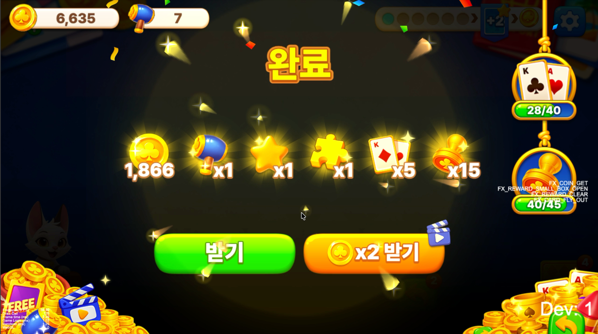
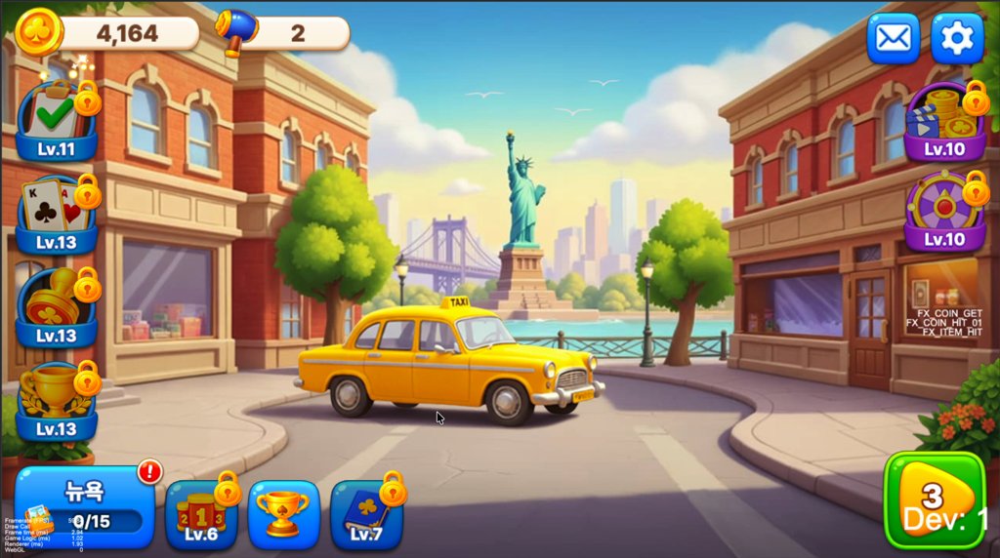
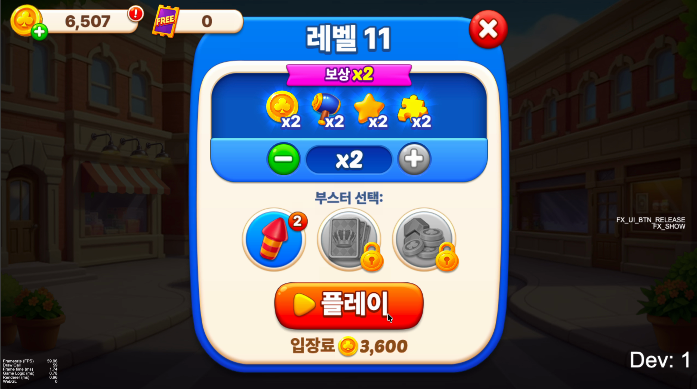
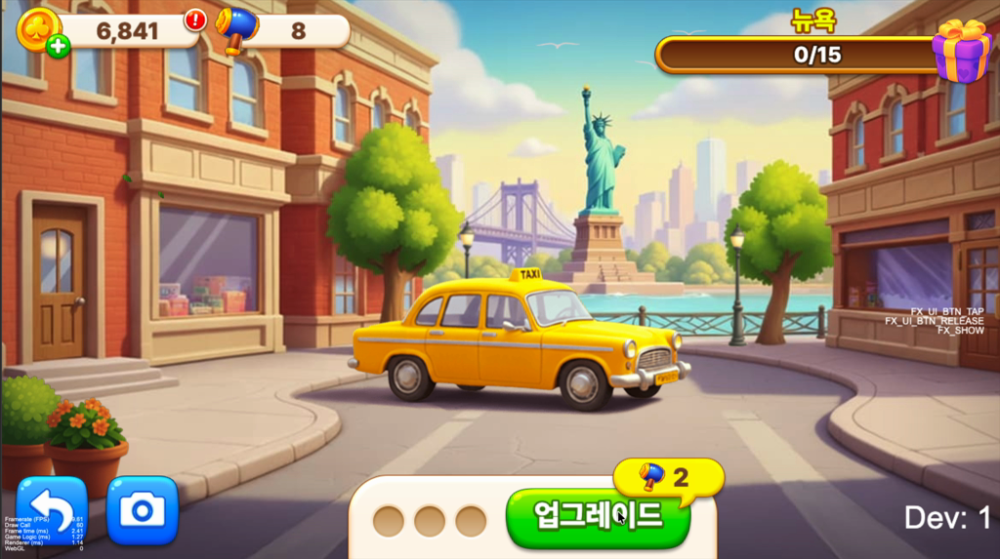

PST 결과 후 플로우 단축 기획서
Solitaire City Journey · 클리어→다음판 사이 뎁스 제거로 인당 판수↑ · 작성 2026-06-24 · 근거 = pst_ftue_funnel_analysis.html ②부 · 화면 = pst_ftue_assets/
개정 이력 — rev.2 2026-06-24: 보상=입장료+마진 왕복 구조 확인 반영(P0 불확실성 제거)·결정② 인게임 보드를 우리 게임 화면으로 교체 / rev.1 2026-06-23: 최초 작성
한눈에
- 문제 — PST 인당 판수가 구조적으로 적음(가입 2주 5.7판, d0→2주 ×1.6로 첫날 후 정체). 판당 RV는 이미 충분히 높은데(0.136) 판수가 적어 인당 RV는 낮음(0.77). 레버 = RV 밀도가 아니라 판수.
- 제1요인 = 클리어→다음판 사이 뎁스 — 받기 → 로비 수령 → 플레이 → 프리레벨 팝업(배수·부스터·입장료) → 다음판. 탭 4회+ · 화면전환 3회.
- 해법 — 결과 화면에서 보상·이벤트 인라인 정산 + [다음판] 직행. 로비·프리레벨 팝업은 기본 경로에서 제거.
- 프리레벨 팝업 제거에 딸려오는 결정 — ① 입장료 폐지(지불→보상 환급의 왕복 구조라 폐지해도 골드 중립) ② 부스터(폭죽)는 인게임 배치 ③ 배수 1배 ④ 데코는 망치(=플레이수) 기반 자동 진입 ⑤ 결과 화면 [홈] 버튼.
- RV 안전 — PST RV의 68.7%가 결과 화면 x2 받기에서 발생(우리가 유지하는 화면). 프리레벨 부스터는 RV 구좌 아님. 판수↑ = 결과 화면 노출↑ = RV↑.
- 경제는 별도 숙제(§7) — 단순 중립 아님 — 입장료 폐지 자체는 보상이 입장료+마진 왕복 구조(확인됨)라 골드 중립(entry=0이면 보상도 자동으로 마진만 남음·순잉여 현행 ~+16M/주 유지·보상테이블 재작업 없음). 진짜 숙제는 판수↑로 인한 인플레 증폭 + 유일 대형 싱크(입장료 85%) 소멸. 해법 = 판보상·수익 불변, "다른 채널"의 골드는 감액(시트·A/B 공통)·아이템 타입은 §7-B 고정표로 인게임 부스터 치환(§7·§7-B). 골든티켓·티켓 동반 정리.
1. 배경 — 왜 판수인가
📊 PST 인당 판수가 낮고, 첫날 후 정체
유입경로(promotion)·런칭 경과주차를 맞춘 코호트 기준. 출처 = pst_ftue_funnel_analysis.html ②부.
| 지표 (promotion 코호트, 가입 2주) | PST | 해석 |
|---|
| 인당 판수 (d0) | 3.9 | 첫날 플레이 |
| 인당 판수 (2주) | 5.7 | 2주간 거의 안 늚 |
| d0→2주 성장 | ×1.6 | 첫날 후 복귀·재플레이 약함 |
| 판당 RV | 0.136 | 판당 수익화는 이미 충분 |
| 인당 RV (2주) | 0.77 | 판수가 적어 총 RV 낮음 |
| D14 리텐션 | 1.7 | 적게 플레이 = 적게 남음 |
핵심 논리: "판당 RV"는 이미 높게 누르고 있는데 "판수"가 병목이라 인당 RV·리텐션이 낮음. 판당 RV를 더 짜는 건 마찰만 키움 → 판수를 늘려야 함. 클리어 직후 다음판으로 가는 마찰을 줄이면 판수가 직접 오름(FTUE 트랙 R1·R11·R4와 같은 방향).
2. AS-IS — 현재 결과 후 플로우
🔁 클리어 → 다음판 = 탭 4회+ · 화면전환 3회

②완료 화면
보상 정산 + [받기]/[x2 받기] · 우측 이벤트 미터

③로비(도시)
받기 후 강제 이동

⑤프리레벨 팝업
배수(−/+)·부스터·입장료·[플레이]
마찰 지점 — (a) 받기 후 강제 로비 경유로 매 판 흐름이 끊김. (b) 프리레벨 팝업의 배수·부스터·입장료 3중 결정이 다음판 진입 전 비용을 키움(NRU에 특히 무거움).
3. 단축 원칙
✅ "결과 화면에서 끝내고 바로 다음판"
- 결과 화면 단일화 — 보상 수령·이벤트 정산·다음 행동 선택을 결과 화면 하나에서 완결.
- 기본 동선 = 다음판 — 로비·프리레벨 팝업 같은 중간 단계를 기본 경로에서 제거. 흐름이 끊기지 않아 "한 판 더"가 쉬움.
- 진입 전 결정 제거 — 배수·부스터·입장료 같은 다음판 진입 전 의사결정을 없애거나 인게임·자동으로 흡수.
- 이탈은 선택지로만 — 로비(도시·데코·상점)는 [홈] 버튼·조건부 자동 진입으로 접근. 강제하지 않음.
4. TO-BE — 제안 플로우 & 설계 결정
🎯 결과 화면 인라인 정산 → [다음판] 직행 (탭 1회)
›
2결과 화면
보상·이벤트 인라인 정산
[다음판] · [x2 받기] · [홈]
›
결정 ① — 입장료 폐지 (골드 중립)
팝업 하단 입장료 🪙 영역에 빨간 테두리 → 화면 밖 라벨. 지불→보상 환급 왕복(net zero)이라 빼도 골드 중립. 팝업이 사라지며 입장료 동선 전부 제거.
- 프리레벨 팝업이 사라지면 입장료도 폐지. 다음판은 비용 없이 즉시 시작.
- 입장료 폐지의 플레이 동선은 단순(비용 없이 즉시 시작). 보상이 입장료+마진 왕복 구조로 확인돼 entry=0이면 보상도 자동으로 마진만 남음 → 입장료 폐지 자체는 골드 중립(보상테이블 재작업 없음). 단 골드 경제는 별도 숙제 — 입장료가 유일 대형 싱크라 폐지+판수↑ 시 인플레 리스크. 해법·진단 = §7.
- 잔액 부족 게이트는 사라져도 무방 — 골드는 아이템 구매 시에만 필요(§6).
결정 ② — 부스터(폭죽)는 인게임 배치
팝업 부스터 선택 제거(주황) → 우리 게임 인게임에 카드 형태로 배치. 위치 = 하단 우측 와일드카드 바로 왼쪽(초록). 폭죽·골든티켓 이동, 와카·undo·extradeck은 이미 인게임.
📎 레퍼런스 (타 게임 2종)
카드형 부스터 배치 예시. 왼쪽 = 하단에 조커·아이템 부스터가 카드 형태로 나열된 예. 오른쪽 = 와일드카드 왼쪽에 카드형으로 둔 예. 우리도 이 스타일로 우리 게임 와일드카드 왼쪽에 부스터 카드 배치.
- 프리레벨 팝업의 부스터 장착 단계 제거 → 인게임 카드 형태로, 와일드카드 왼쪽에 배치(참고 이미지 스타일). 개발아트
- ⚠ 튜토리얼 노출 필요 — 의사결정 사안: 부스터를 인게임 카드형으로 옮기면 해당 위치·사용법 튜토리얼이 새로 노출되어야 함. 방식 택1 → (a) 하드코딩(간단·빠름, 단 const 제어 밖) vs (b) `tutorial_guide`에 전용 항목 1개 신설(데이터로 on/off·순서 제어, 기존 튜토 체계와 일관·권장). 기획개발
결정 ③ — 배수 1배
배수 (−) x2 (+) 영역에 빨간 테두리 → 화면 밖 라벨. 스테이크(입장료)가 사라지니 배수도 폐지하고 1배로. 보상 = 카드매칭 + 스트릭(왜곡 없음).
- 입장료(스테이크)가 사라지므로 배수도 폐지, 1배로 진행. 배수 선택(−/+) UI 제거. 보상 = 카드매칭 + 스트릭(왜곡 없음).
- 경제 1배·입장료 0 전환 시 난이도·보상 곡선 1회 점검(베팅 연동으로 튜닝됐던 부분 확인). x2 받기(RV)는 그대로 base 보상의 더블 → 표기 혼동 없음(1배라 ×2가 명확).
결정 ④ — 꾸미기(데코) 메타는 망치(=플레이수) 기반 자동 진입

망치 임계 시 자동 꾸미기
도시의 [업그레이드](망치 재화) 강조. 망치 수 = 플레이 수 → 임계 도달 시에만 결과 후 자동 진입 + 자동 꾸미기 1회, 그 외엔 다음판 직행. 빈도가 플레이 수에 자연 비례.
- 로비 강제 경유를 없애면 데코 노출 동선이 사라짐 → 데코 재화(망치)가 "1스텝 꾸미기" 임계 도달 시에만 결과 후 로비 자동 진입 + 자동 꾸미기 연출 1회, 그 외엔 다음판 직행.
- 망치 수 = 플레이 수이므로 자동 진입 빈도는 플레이 수에 자연 비례 — N판마다 1회 꼴로 데코 진입. 이 비례에 맞춰 임계값 조정.
- 기획 "1스텝 꾸미기 = 망치 N개 = N판" 환산값·세션당 상한 정의.
- ⚠ 현재 데코 비용 = 망치 + 골드 합산. 자동 꾸미기에서 골드까지 자동 차감하면 UX 부담(입장료 폐지로 골드는 더 귀해짐) → 자동 경로는 망치 단독 권장. 골드는 유저가 도시에서 직접 수동 업그레이드할 때만 쓰는 스피드업 선택지로 남겨 골드 싱크 일부 유지. 경제
결정 ⑤ — [받기] 한 번에 결과+이벤트 동시 수령 → 다음판
이벤트 진척(우측 상-중단 카드수집 28/40·트로피 40/45 미터)은 이미 결과 화면에 노출됨 → 신규 UI 불필요. 이벤트 보상도 [받기]에 묶어 자동 수령(별도 탭 없음).
- 수령 플로우 = [받기] 1번: ⓐ 결과 보상 + ⓑ 이벤트 마일스톤 보상(도달 시) 동시 수령 → ⓒ 다음 판으로 즉시 이동. 이벤트용 별도 탭/화면 없음.
- 이벤트 진척 미터는 이미 결과 화면 우측에 노출 → 추가 인라인 UI 불필요(수령 로직만 [받기]에 연결).
- 로비 강제 이동 금지 — 마일스톤 보상도 결과 화면 [받기]에서 처리, 끝나면 다음판 직행.
결정 ⑥ — 결과 화면 [홈] 버튼
[홈] 골드 아래 신설
[받기]=수령+다음판
x2 받기 유지
[받기] = 결과+이벤트 수령 후 다음판 직행(주 CTA), [x2 받기] 유지(RV 68.7% 구좌), [홈]은 골드 재화 바로 아래 신설. 기본 동선이 "받기→다음판"이 되도록 시각 위계 설계.
- 다음판 직행이 기본, 로비로 가고 싶은 유저용 명시적 [홈] 버튼을 좌상단 골드 재화 바로 아래에 신설. 시각 위계: [다음판] 주 CTA(최대) · [x2 받기] 보조 · [홈] 작은 아이콘. 아트
결정 ①②③ 영향 — 사라지는/이전되는 튜토리얼 (tutorial_guide·unlock 대조)
| tutorial_guide | content_id | 현재 위치 | unlock | 처리 |
|---|
| 230005 | content_pre_level_popup
T_TUT_PRE_LEVEL | pre_level / PLAYBUTTON | 50106 (Lv3) | ❌ 삭제 (팝업 제거) |
| 230018 | content_betting_2
T_TUT_BETTING_2 | pre_level / BETTINGBUTTON | 50009 (Lv10) | ❌ 삭제 (배수 폐지) |
| 230022 | content_betting_4
T_TUT_BETTING_4 | pre_level / BETTINGBUTTON | 50050 (Lv20) | ❌ 삭제 (배수 폐지) |
| (튜토 없음) | content_betting_1 | — | 50008 (Lv3) | ❌ unlock 삭제 (배수 폐지) |
| 230014 | booster_fireworks
T_TUT_FIREWORKS | pre_level / BOOSTER1 | 50051 (Lv5) | 🔄 인게임 튜토로 이전 (카드형·와일드 왼쪽) |
| 230025 | booster_golden_ticket
T_TUT_GOLDEN_TICKET | pre_level / BOOSTER2 | 50052 (Lv8) | 🔄 인게임 튜토로 이전 |
| 230003 | content_lobby_play
T_TUT_LOBBY_PLAY | lobby / LOBBYPLAYBUTTON | — | ❌ 삭제 (다음판 직행=로비 플레이 단계 없음) |
| 230029 | content_lobby_play_2 | lobby / LOBBYPLAYBUTTON | — | ❌ 삭제 |
① 삭제(팝업·배수·로비플레이 종속): 프리레벨 팝업 인트로·베팅1/2/4·로비 플레이 튜토 → tutorial_guide 행 + 해당 unlock 제거.
② 이전(부스터): booster_fireworks·booster_golden_ticket는 pre_level(BOOSTER1/2)에 붙어 있어 팝업과 함께 사라짐 → 인게임 카드형 위치(와일드 왼쪽) 전용 튜토로 신설. 기존 인게임 부스터 튜토 패턴(booster_wild_card 230013: play_scene=ingame·trigger=first_appear) 그대로 따르면 됨.
③ 유지(이미 인게임, 변경 없음): booster_undo(230015)·booster_wild_card(230013)·booster_extra_deck(230016).
→ 이 "이전" 2건이 §10 P0의 튜토리얼 의사결정(하드코딩 vs tutorial_guide 전용 항목)과 직결. 권장 = tutorial_guide에 ingame 전용 항목 신설.
5. RV 구좌 분석 — 플로우 변경이 RV에 미치는 영향
📺 PST RV의 68.7%는 결과 화면 x2 받기 (우리가 유지)
BigQuery 4200_RV_START · data.type 기준 · 6/8~6/22. PST 판당 RV가 어느 구좌에서 나오는지.
| RV 구좌 | 위치 | 비중 | 플로우 변경 영향 |
|---|
| x2 받기 (ingame_reward_double) | 결과 화면 | 68.7% | 유지 영향 없음 · 판수↑로 노출↑ |
| lobby_free_gold | 로비 | 11.1% | 로비 축소 시 일부 감소 — 홈/자동진입으로 접근 유지 |
| free_coin | 로비/팝업 | 8.0% | 위치 재배치 시 보존 가능 |
| shop | 상점 | 5.4% | 영향 없음 |
| daily_gift_missed | 출석 | 4.5% | 영향 없음 |
| daily_change_task | 태스크 | 2.2% | 영향 없음 |
결론: 주 RV(68.7%)는 우리가 유지하는 결과 화면 x2 받기. 프리레벨 부스터는 RV 구좌가 아님(골드/아이템). 즉 플로우 단축은 RV 매출을 안 건드리고, 판수가 늘면 결과 화면 노출이 늘어 RV가 오히려 증가. 로비 무료골드(11%)만 로비 축소의 잠재 영향인데 [홈]·조건부 자동진입으로 회수 가능.
6. 점검 포인트
⚠ 같이 확인할 것 (실질 과제)
- 난이도·보상 곡선 점검 (핵심) — 배수 1배·입장료 0 전환 시, 베팅 연동으로 튜닝됐던 보상/난이도가 어긋나지 않는지 1회 점검. 보상 = 카드매칭 + 스트릭으로 단순화되므로 레벨별 기대 보상·난이도 곡선 재확인. 경제기획
- 전면(IT) 광고 빈도 — 판수가 늘면
interstitial_ad_level_clear_interval 발동이 잦아져 마찰·이탈 위험. R11(첫 세션 off) 유지 + 인터벌 재점검. 개발
- 데코 자동 진입 빈도 — 망치(=플레이수) 기반이라 자연 비례하지만, 너무 잦으면 "강제 이탈" 재발 → 세션당 상한·환산값 설정. 기획
- 데코 골드 싱크 — 자동 꾸미기를 망치 단독으로 하면 기존 데코의 골드 싱크가 줄어듦. 골드 인플레 모니터 + 수동 데코·상점으로 싱크 보완. 경제
- 세션 길이·피로 — 즉시 재시작이 번아웃 유발하지 않는지 세션 길이·이탈 모니터.
✓ 확인 완료 — 이슈 아님
- 골드 경제 — 입장료 폐지는 왕복 구조라 그 자체로 중립(확인됨), 단 판수↑ 인플레는 별도 과제 → §7에서 진단·해결(채널 화폐전환 주·신규싱크 보조). 단순 net-zero로 끝나는 문제 아님.
- 잔액 부족 게이트 — 골드는 아이템 구매 시에만 필요 → 입장료 폐지로 플레이 게이트가 사라져도 문제 없음(구매 시점에 안내).
- 배수 ↔ x2 받기 중복 — 배수 1배라 x2 받기(RV)가 base의 명확한 ×2. 혼동 없음.
7. 경제 상세 — 골드 밸런스 (입장료 폐지의 진짜 숙제)
💰 골드 수도꼭지 vs 싱크 진단
BQ 9400_GOLD_TRANSACTION_LOG · latency.api별 · 6/15~6/21(7일) · 활성 ~312명. 잔액로드(get-data/login)는 제외.
| 수도꼭지 (earn) | 주간 골드 | 싱크 (spend) | 주간 골드 |
|---|
| 판 보상 (game-end) | +41.5M | 입장료 (game-start) | −33.4M |
| 컬렉션 | +6.0M | 부스터 구매 | −5.6M |
| RV (x2받기+RV골드) | +5.7M | 데코 | −0.25M |
| 방치 골드 | +0.9M | | |
| 데일리(기프트+태스크) | +0.9M | | |
① 입장료 폐지 자체는 골드 중립 (확인됨) — 보상이 입장료+마진(entry_cost+reward_margin) 왕복 구조로 확인됨. entry=0이면 보상도 자동으로 마진만 남아 판보상이 입장료만큼 자동 축소 → 순잉여는 현행 ~+16M/주 유지(보상테이블 재작업 없음). 즉 입장료 폐지 그 자체로는 인플레를 만들지 않음 — 숙제는 ②③의 구조적 요인.
② 입장료=유일 대형 싱크(전체 싱크 85%)·강제(100% 판) — 폐지 시 완충 소멸. 단 신규 싱크(실패 Continue 등)는 선택(전환율)이라 강제 싱크를 단독 대체 불가(가장 공격적 가정서도 −33.4M의 ~21%). 판수↑(post-clear v2 목적)가 인플레를 증폭(판수 ×2.86 시 +137M/주).
③ ⚠ 티켓도 동반 사망 — 구조화 채널의 비골드 보상 다수가 currency_ticket(= 보조 입장료). 입장료 폐지 시 골드+티켓 둘 다 입장료 경제 산물이라 함께 재설계 대상.
④ ∴ 핵심 레버 = "골드 싱크 신설"이 아니라 "다른 채널의 화폐 믹스 전환" — 인게임 수익·판보상 지급(소소)은 불변. 구조화 보상 채널(meta_city 425K·이벤트·앨범·데일리…)의 골드는 감액(A/B 공통·시트), 사라지는 아이템(프리부스터 일부·티켓)은 §7-B 고정표 치환 → 골드만 희소화(IAP 가치 보호). 상세 = pst_postclear_economy_verification.html · pst_postclear_reward_redesign.html.
설계 — ①채널 화폐전환(주) + ②신규 싱크(보조)
- ★ 주(主) 레버 = 다른 채널의 골드/티켓 → 비골드 전환 — 구조화 보상 채널(meta_city·이벤트 마일/랭킹·앨범·데일리·휠)의 골드 슬롯은 감액(슬롯·수량 유지), 사라지는 아이템(프리부스터 일부·티켓)은 §7-B 고정표로 인게임 부스터 치환. 슬롯·연출 유지(체감 너프 방지) → 지급 풍성·골드 희소·수익 보호. V4 선례(
gold270→ticket×1) 확장. 경제
- 인게임 수익 보호 가드 — 부스터 무료공급 증량 금지(IAP 번들 잠식 방지)·골드 희소 유지(IAP 골드 가치)·인피니트는 상위 보상에 소량만.
- 신규 골드 싱크(보조) — 골드 상점 ⓐ·실패 Continue(near-miss) ⓑ·부스터 골드 즉시충전 ⓒ. 단 선택 싱크라 단독으론 입장료 공백을 다 못 메움(보조).
- 자동 꾸미기 = 망치 단독(골드 0) / 수동 꾸미기(도시) = 망치+골드 유지(선택형 싱크). 경제
- 판 보상 = 손대지 않음 — 왕복 구조라 entry=0이면 자동으로 마진만 남음(수동 재작업 불필요)·인게임 수익 직결. 인플레는 채널전환으로 잡음. 경제
방치 골드 / RV 골드 — 현 지급량 적정성
| 항목 | 현재 | 실측 | 판정 |
|---|
| 방치 골드 | cap 8,000 / 4시간 | 105명·인당 ~8.5K/주(~1.2K/일) | 전체 4% 수준·복귀유인 → 현 수준 유지, 증액 금지 |
| RV 골드 | 2,000/회(상점·인박스·팝업) + x2받기 doubling | x2받기가 RV 골드의 대부분(+5.6M) | 광고 engagement 견인 → 양 유지, 단 골드 가치(싱크) 선행 필요 |
방치·RV 골드 결론: 둘 다 양 자체는 유지가 맞음(방치=복귀유인, RV=광고수익). 문제는 양이 아니라 골드가 쓸 데 없어 잉여라는 것 → 증액하지 말고, 위 싱크 신설로 골드 가치를 올려야 이 보상들도 의미를 가짐. 인플레가 심해지면 1순위 축소 대상은 큰 수도꼭지(컬렉션·x2받기)이지 방치(작음)가 아님.
자동 꾸미기 → 로비 이동, 괜찮은가
- 허용 가능 — 단 조건부. 자동 꾸미기는 로비 이동을 수반하지만, 매 판 강제와 달리 가끔(망치 임계) 있는 보상 연출이라 긍정적. 단 ① 빈도 상한(N판당·세션당 1회) ② 완료 즉시 [다음판]으로 자동 복귀(로비 방치 금지)가 전제.
- 이 두 조건이 어려우면 대안: 데코를 결과 화면 인라인 진척 표시로만 두고 로비 이동 없이 처리(연출은 약해지나 루프 무중단).
7-B. 클라 작업 — 보상 아이템 타입 치환 (프리부스터·티켓 제거)
🔧 프리레벨 팝업 제거 → 사라지는 아이템을 지급 보상에서도 일괄 치환
post-clear v2(B)에서 프리레벨 팝업이 사라짐. 폭죽은 인게임 부스터로 이전돼 게임에 그대로 존재하므로 보상 유지(치환 안 함). 반면 골든티켓(프리미엄·92명 집중 → 무료 지급 희소 유지)과 입장료 대체화폐(티켓)·관련 인피니트는 지급 보상에서 인게임 부스터로 치환 → 전 보상 채널에 아래 고정 치환표 적용.
📊 채널별 Before / After 전체 보기 → 실제 시트 그리드·전 채널·골드(공통)/아이템 치환(B전용) 색 구분
A/B 적용 — 이 타입 치환은 B(post-clear v2) 빌드 전용(A 대조군은 원본 유지). 골드 값 감액은 기획이 시트에서 A·B 양 빌드 공통 적용(클라 무관). 즉 클라가 할 일은 아이템 타입 치환뿐.
고정 치환표 (클라 1패스 일괄 · id만 교체 · 수량 n 유지)
| 대상 (현재 보상에 존재) | → 처리 | 비고 |
|---|
booster_fireworks (프리부스터1·폭죽) + infinite_fireworks_* | 치환 안 함 — 보상 유지 | 인게임 부스터로 이전돼 게임에 존재 |
booster_golden_ticket (프리부스터2·골든티켓) | → booster_wild_card | 원본 n 유지 · 프리미엄 희소 유지 |
currency_ticket (입장료 대체화폐) | → booster_undo | 원본 n 유지 · 입장료 폐지로 소멸 |
infinite_gticket_* · infinite_ticket_* (5m/10m/15m) | → booster_extra_deck | 원본 n 유지 · 프리미엄→최고가 인게임 부스터 |
인게임 잔존 부스터(booster_fireworks·booster_wild_card·booster_undo·booster_extra_deck)는 그대로. 폭죽은 인게임 이전이라 보상 유지가 맞음(제거 아님). 골든티켓/티켓/관련 인피니트만 치환.
적용 대상 탭 (밸런스시트 보상 채널 전체)
event_milestone · event_ranking · collection_album_milestone · collection_album_puzzle_list · meta_city_list · daily_gift · daily_wheel · daily_task — reward_item_key(_1~3) / reward_*_type 슬롯 전수 스캔 후 치환.- 슬롯 수 불변(id·수량만 교체, 슬롯 추가·삭제 없음) → 보상 UI 수정 불필요. 개발QA
QA 검증: B 빌드의 어떤 보상 슬롯에도
booster_golden_ticket·
currency_ticket·
infinite_gticket_*·
infinite_ticket_* 가
0건이어야 함(치환 누락=버그).
booster_fireworks·
infinite_fireworks_*는
유지(존재 정상). 수량(n)은 원본과 일치. 산출물 대조 =
pst_reward_beforeafter.html(B전용 치환 셀 파란색·골드 감액 셀 빨간색·전 채널).
8. 화면별 변경 명세
| 화면 | AS-IS | TO-BE | 파트 |
|---|
| 완료/결과 화면 (02) | [받기]/[x2 받기] → 로비 이동 | 인라인 정산 + [다음판] 주 CTA · [x2 받기] 보조 · [홈] 추가 · 이벤트 진척 인라인 | 개발아트기획 |
| 로비(도시) (04/28) | 매 클리어 강제 경유 | 기본 경로서 제거 · 데코 재화 임계 시에만 자동 진입+자동 꾸미기 · [홈] 수동 진입 | 개발기획 |
| 프리레벨 팝업 | 배수·부스터·입장료·[플레이] | 제거 · 입장료 폐지 · 배수 1배 · 부스터는 인게임 | 개발경제기획QA |
| 인게임 보드 | 부스터 진입 전 장착 | 폭죽 등 부스터 인게임 사용 버튼 추가 | 개발아트 |
| 이벤트 정산 | 로비/별도 화면 | 결과 화면 인라인 오버레이 | 개발기획 |
| 경제 테이블 | 입장료 지불→보상 환급(왕복) + 베팅 | 입장료 0 · 배수 1배 · 보상 = 카드매칭+스트릭(골드 중립) · 난이도/보상 곡선 점검 | 경제기획 |
9. 성공 지표 & 검증
- 1차(직접): 인당 판수(세션당·가입 2주) — 현 5.7 → 상향, d0→2주 ×1.6 개선.
- 2차(연결): D1/D7/D14 리텐션 · 인당 RV(판수↑로 총 RV 회복) · 세션 길이.
- 가드레일: 골드 잔고·인플레율(핵심) — 입장료 폐지로 대형 싱크가 사라져 골드 잉여 가속 우려(§7). 신규 싱크 소비율·골드 중앙값 추이 모니터. + 결과 화면 x2 전환율(RV) · IT 광고 노출/이탈 · 데코 진척률 · 레벨별 보상/난이도(곡선).
- 방법: A/B(신규 코호트, 유입경로 분리, promotion 일치 전후). BigQuery
solitaire_city_journey_toss.
✅ 마스터 1개 + 종속 3그룹 (const 탭 기준)
실제 PST const 탭에 그대로 옮길 수 있게 정리. 종속 값/동작을 "한 질문"에 대응하는 3그룹으로 묶음 — ① 프리레벨 팝업 띄울까? ② 보상 어디서 받을까(로비/결과)? ③ 꾸미기 자동/수동? 평소엔 마스터만 켜고, 그룹 플래그는 그룹 단위 A/B용.
온오프 구조 — 마스터 1개 + 그룹 플래그 3개
| const (on/off) | v1→v2 | 켜면 (그룹 내용 = desc) |
|---|
| is_quick_next_loop_open | 0 → 1 | ★마스터 — "결과 후 로비 없이 바로 다음판" 전체. 0=킬스위치(전부 v1), 1=정합 검증 후 그룹 적용 |
| is_prelevel_popup_open | 1 → 0 | 그룹① 프리레벨 팝업 스킵·다음판 직행 — 입장료 폐지·배수 1배·부스터 인게임 카드형 포함(전부 팝업 안에 있던 것 → 같이 켜고 같이 꺼야 함) |
| is_reward_on_result_open | 0 → 1 | 그룹② 보상 결과화면 수령 — [받기] 1번에 결과+이벤트 마일스톤 동시 수령→다음판·[홈] 버튼. ※①과 항상 동일 |
| is_deco_auto_open | 0 → 1 | 그룹③ 데코 자동 — 망치 임계 시 자동 꾸미기·골드 미사용. ①②와 독립(단독 A/B) |
✅ 정합 게이트 (그룹이 정합해야 마스터가 돈다) — v2적용 = is_quick_next_loop_open AND 그룹정합(). 그룹①⟺②는 반드시 동일(①만 켜고 ② 끄면 "다음판 직행했는데 보상은 로비서" 모순) → 불일치 시 전체 v1 폴백 + 경고 로그. 그룹③ 독립. 평소 운영: 마스터만 ON.
그룹이 참조하는 _v2 값(시트에 보임·튜닝용, 동작 전환은 위 플래그가 함): 그룹① entry_cost_base_v2=0·entry_cost_increase_v2=0·entry_cost_max_cap_v2=0 / 그룹③ deco_auto_hammer_threshold_v2=5(Normal ~5판당 자동꾸미기 1회·로비이동 빈도상한)·deco_auto_use_gold_v2=0. (배수 1배·부스터 인게임·[홈]·[받기] 동시수령은 const 값 아닌 코드 분기 — [B])
[C] 변경 없음 — v1 유지 (확인용)
- 보상 계산식 = 입장료+마진 왕복 (확인됨) — 보상이
entry_cost + reward_margin 구조라 entry=0이면 자동으로 마진만 남음 → 판보상 테이블 재작업 불필요(코드가 자동 처리). 경제 영향 = pst_postclear_economy_verification.html.
- card_maching_gold_*·ingame_combo_reward·remaining_deck_reward — 실 게임 보상, 유지.
- idle_gold_*(cap 8000) — 방치 골드 유지(§7) · shop/inbox/popup_free_gold_amount(2000) — RV 골드 유지(§7).
개발 / A/B
- 신/구 path 둘 다 동봉 →
if(is_quick_next_loop_open AND 그룹정합) v2 else v1. 서버(game-start/end)+클라(UI) 같은 마스터 읽음(SSOT). v2 값 누락 시 v1 폴백.
- 출시 OFF → 검증 ON → 롤백 OFF. A/B = 마스터 단위(번들 전체) 또는 그룹 단위(①/②/③ 독립). 단계 적용도 그룹별 가능(예: ③ 데코만 먼저). const 유저버킷 미지원 시 difficulty_tier처럼 서버가 세그먼트별 값 반환.
⚠ 착수 전 확인 (P0)
- 보상 =
entry_cost + reward_margin 왕복 구조 확인 완료(entry=0 시 보상=마진 자동). 적용 후 실제 지급액이 마진과 일치하는지 회귀만 확인.
- 배수 1배 고정 시
puzzle_piece_drop_amount_betting_1(=1)만 적용됨 → 퍼즐피스 수급 곡선 점검.
- 데코 비용·자동 진입이 const로 제어 가능한지 — 현재 const 탭에 deco 항목 없음 → [A]의 deco_* 신규 추가 필요(또는 decoration 테이블에).
- 인게임 부스터 튜토리얼 방식 결정 —
booster_fireworks·booster_golden_ticket 튜토가 pre_level에서 사라짐 → 인게임 카드형(와일드 왼쪽)용으로 이전 필요(§4 튜토 영향표). (a) 하드코딩 vs (b) tutorial_guide ingame 전용 항목 신설(booster_wild_card 패턴, 데이터 제어 → 권장). 삭제 대상(팝업·베팅·로비플레이 튜토)도 함께 정리.
11. QA 체크리스트 — 확인 항목 · 방법 · 엣지 케이스
| 영역 | 확인 항목 | 확인 방법 | ⚠ 엣지 케이스 |
|---|
| 마스터 / 정합 게이트 |
마스터 OFF=전부 v1(현 동작) · ON=3그룹 v2. 그룹①≠② 불일치 시 전체 v1 폴백+경고 로그 |
밸런스시트 is_quick_next_loop_open 0/1 토글 후 세션 갱신, 동작 비교. 그룹①=1·②=0 강제 설정 후 로그 확인 |
v2 값 셀 비움 → v1 폴백되는지 · 불일치 시 반쪽 적용 안 되는지 · 세션 중 플래그 바뀌면 다음 세션부터 반영 |
| 그룹① 팝업·입장료·배수·부스터 |
클리어→다음판 직행(팝업 X) · 입장료 차감 0 · 배수 1배 고정 · 부스터 인게임 카드형(와일드 왼쪽) |
클리어→다음판 탭 수=1 확인 · 클리어 전후 골드 변화(입장료 차감 0) · 인게임 부스터 위치/카드형 확인 |
골드 0에서도 다음판 진입(입장료 없음=무제한) · 첫판/튜토에서도 팝업 X · 보상=margin만 지급 검증 · 부스터 미보유 시 카드 비활성 표시 |
| 그룹② 보상·이벤트·홈 |
[받기] 1번에 결과+이벤트 마일스톤 동시 수령→다음판 즉시 이동 · [홈] 골드 아래 노출·동작 |
마일스톤 도달 판 클리어→[받기]→결과·이벤트 보상 둘 다 인벤 반영·로비 안 거침 확인 · [홈] 눌러 로비 진입 확인 |
마일스톤 미도달=결과 보상만+다음판 · 마일스톤 다중 동시 도달 전부 수령 · 이벤트 없음/종료 시 정상 · x2 받기 후 플로우(RV→다음판) |
| 그룹③ 데코 자동 |
망치 임계 도달 시만 자동 진입+자동 꾸미기→다음판 복귀 · 골드 미차감(망치만) |
망치 임계 모이는 판 클리어→자동 로비 진입·꾸미기 연출·다음판 복귀 확인 · 골드 변화 0 확인 |
임계 직전/직후 경계 · 자동 꾸미기 후 로비 방치 안 되고 다음판 복귀 · 빈도 상한(세션당 N회) 준수 · 망치+골드 보유 시 골드 안 빠짐 · 수동 꾸미기는 골드+망치 정상 |
| 튜토리얼 |
삭제 튜토(팝업·베팅·로비플레이) 미노출 · 이전 부스터 튜토(폭죽·골든티켓) 인게임 카드 위치서 노출 |
신규 계정 진행하며 레벨별 튜토 노출 확인 · 폭죽(Lv5)·골든티켓(Lv8) 언락 시 인게임 튜토 트리거 확인 |
기존 유저(튜토 이미 본 계정) 중복/누락 없는지 · 삭제 튜토의 unlock도 정리됐는지 · 튜토 순서 꼬임 없음 |
| 경제 / 광고 |
입장료 폐지 후 순 골드 변화 없음(왕복) · 판수↑로 IT 전면광고 빈도 정상 |
동일 판 v1/v2 클리어 시 순 골드 증감 비교(같아야) · 연속 플레이 시 IT 광고 인터벌 확인 · 골드 잔고 장기 추이 |
무제한 플레이 시 골드 누적 폭주 모니터(인플레) · IT 광고 과다 노출 안 됨(R11 첫 세션 off 유지) |
회귀 테스트: 마스터 OFF에서 현 라이브와 100% 동일해야 함(신/구 path 분기라 OFF=현행). 출시 직후 OFF 상태 회귀 먼저 통과 후 ON 검증.